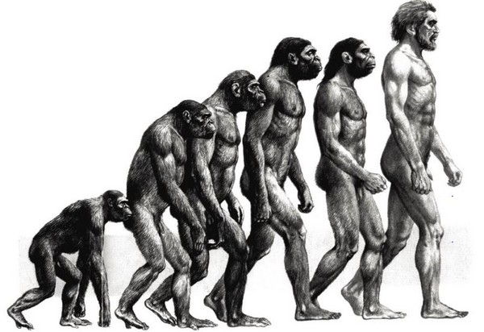
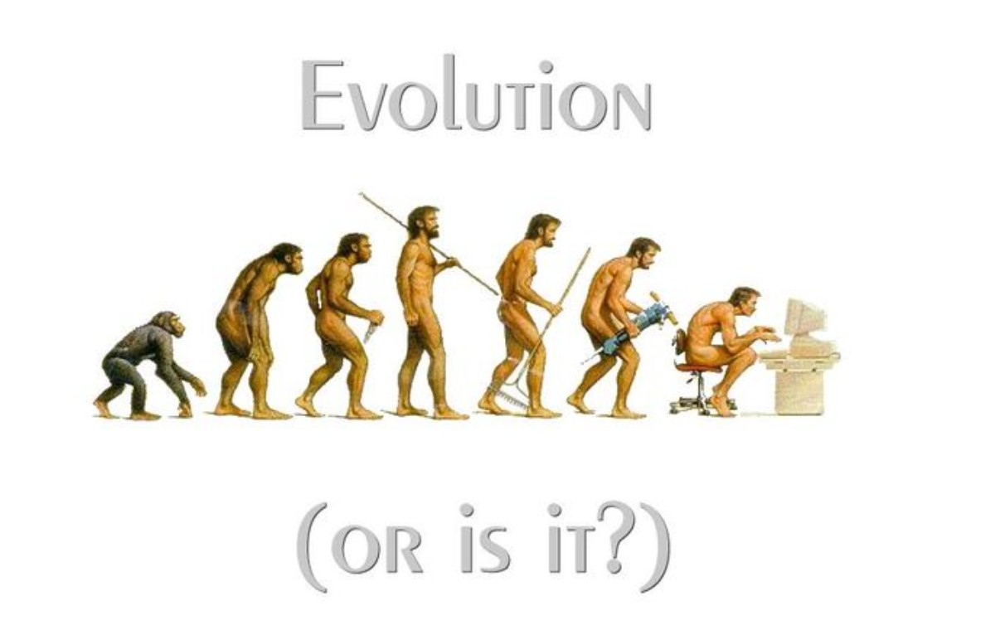

01
我們曾經學會直立
文明的演化，應該讓人更自由、更省力，而不是被工具反過來壓低姿態。
幫你快速找到 AI、生產力、設計、文件處理與開發工具，把零碎工作變成漂亮流程。
Tool Categories
換個關鍵字或切回全部分類試試看。
Technology Friction
人類花了數百萬年學會挺直脊椎，卻在科技爆炸的今天，因為繁瑣指令與黑色視窗，再度駝下背。NVD 自生活誕生，就是為了用滑鼠右鍵的一鍵自動化，終結退化，還給每個人最直覺、最省力的自生活。

文明的演化，應該讓人更自由、更省力，而不是被工具反過來壓低姿態。

黑色視窗、複雜指令與層層設定，都是不該由使用者承擔的摩擦力。
當我們走到生命後半段，難道就注定被現代科技拋棄，只能對著電腦發愁嗎？
The Sovereign Manifesto
「現在的我們，就是未來的你們。」
我們不是在乞求同情，而是在以全人先驅者的姿態，為人類提前建設「社會友善韌性工程」。當世界還在討論被動扶助，NVD 已經在定義規則。
N (Nature) —— 天生、本然、無所畏懼。
生命不是一場等待被拯救的苦旅，而是一場頂級的硬核遊戲。打破體制設定的局限，我們以天生的姿態，在社會韌性的沙盒中重新定義玩法。我們是規則的打破者，也是全新賽道的定義者。
V (Value) —— 本我價值、不容置疑。
拒絕標籤，拒絕被社會殘留的估值系統定義。我們的存在，本身就是最高級別的資產。在集體意識共鳴的浪潮中，我們將被動的弱勢逆向轉譯，奪回價值的終極定價權。
D (Days) —— 跨越過去、現在與未來的日子。
這不是一場短期的倡議，而是一場跨越時間軸的社會韌性工程。我們所建造的未來，是讓每一個推著嬰兒車的母親、意外受傷的強者、以及終將老去的靈魂，都能在時間的流逝中，擁有無所阻礙的永恆日常。
Sovereign Logic —— 規則定義者。
領先時代的步伐，我們率先踏入高階資產工程學的實踐場。以傲然的姿態，站在人類集體演化的前沿。這不是為了特定族群而做的妥協，這是為全人類提前建構的社會韌性防線。
Social Resilience Engineering —— 社會韌性工程。
拒絕溫吞的文青呢喃，我們用跨域邏輯進行結構性壓制。將傳統公益的碎步，升級為系統化的社會韌性架構。NVD 是地基、是框架、是未來社會運行的頂層協議。